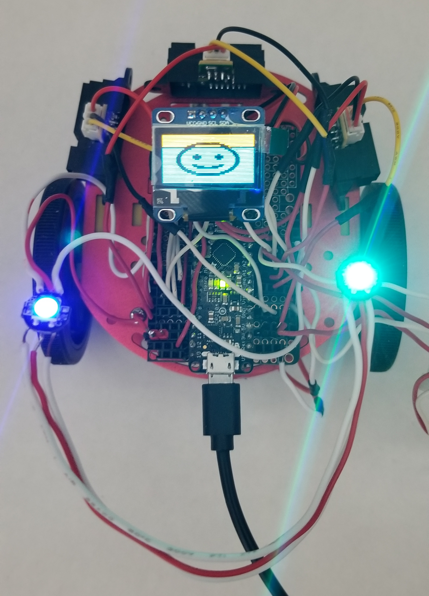
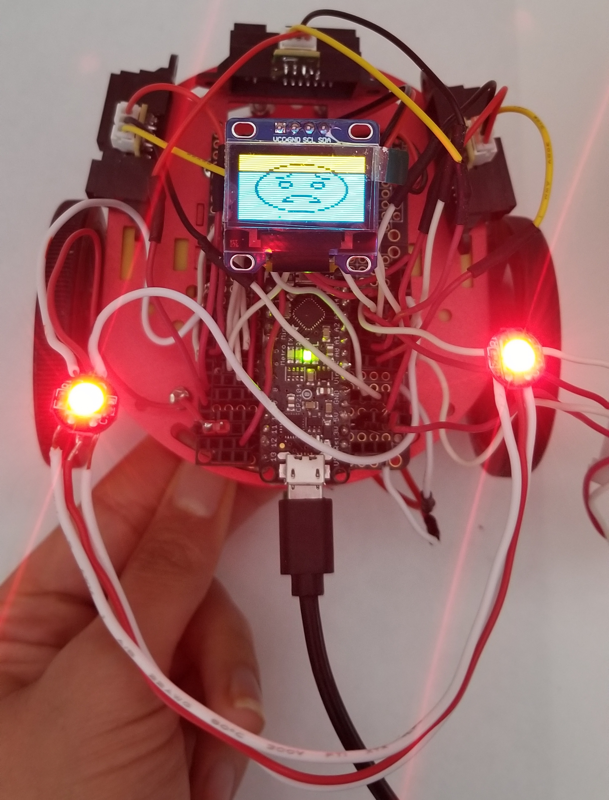
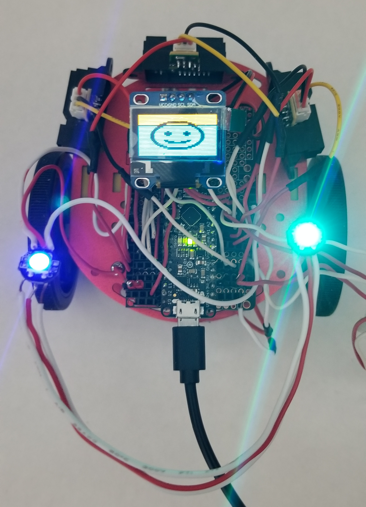
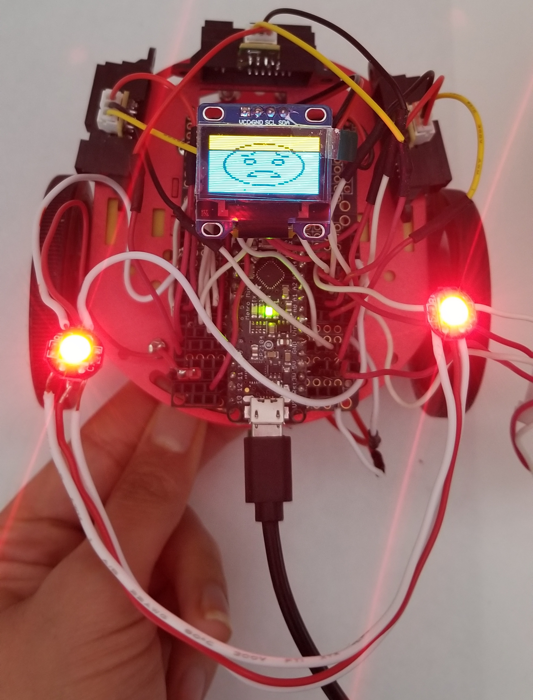

My prototype of my project ended with my chassis robot being attached with a metro mini, stepper driver motors, 3 distance sensors, a graphic display, IMU, and neopixels. I currenly had a basic program that allowed all hardware parts to function unanimously, which also included some functions that allowed one part to affect another. In this program, my IMU controlled my neopixels, while displaying it's data on to the graphic display. My 3 distance sensors, when triggered at a specific distance, would cause the chassis bot to move forward.
(Refer back to "Prototype" page for more details)
The proposal I chose to accomplish for my final was Proposal A: Prototype Upgrade. The upgrades I plan to make are more software focused. These upgrades include:


.jpg)


.jpg)
 



My biggest success (although minimal) is getting the IMU to successfully move the robot by simply constraining the values of my IMU's axes. I'm also very happy that my neopixels and graphic display of emotions react accordingly and without delay to my distance sensors. For example, if any of the distance sensors are triggered, my graphic display will change from a happy/content emoji to a frightened emoji, and the neopixels will also all turn red to emphasize it's alarmed.
I definitely had several failures. One being I could not make office hours lol So this really made me fall behind as I would have questions, but I couldn't make office hours to ask them. So I had to figure out a simple method (that I could come up with lol) to achieve what I wanted and succesfully show progress of all my parts working how I intended them like in my proposals. One of my biggest failures was definitely not cleaning up my IMU's functionality more. Because I only merely constrained the values to be detected in that range and have my robot react only when that range is triggered, this lead to several sensitivity issues. Since the IMU is so sensitive, if the user is to move it in that range accidentally when making another gesture, it would trigger the robot to react differently than intended. Although I tested some if statements to try and clean this up, I just couldn't quite get it right. Another failure was my front distance sensor not triggering my robot to go backwards. I researched and tried several different methods of trying to reverse my robot's DC motors, however only one motor would reverse so I decided to exclude this and just have both motors go forward for now when triggered by the front distance sensor :/